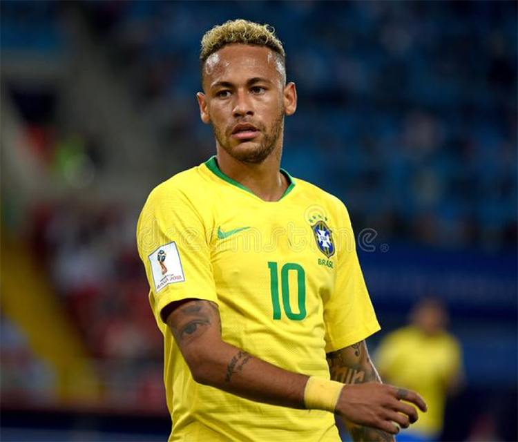

Neymar Jr
Neymar, in full Neymar da Silva Santos, Jr., (born February 5, 1992, Mogi das Cruzes, Brazil), most prolific scorers in his country's storied football history.
Neymar, in full Neymar da Silva Santos, Jr., (born February 5, 1992, Mogi das Cruzes, Brazil), most prolific scorers in his country's storied football history.

Lionel Andrés Messi is an Argentine professional footballer who plays as a all his professional career for La Liga club Barcelona, whom he captained from 2018 to 2021.

Rolando Jorge Pires da Fonseca, known simply as Rolando, is a Portuguese footballer who plays for S.C. Braga as a central defender.

Paulo Exequiel Dybala is an Argentine professional footballer who plays as a forward for Serie A club Juventus and the Argentina national team.

Mesut Özil is a German professional footballer who plays as an attacking midfielder technical skills, creativity, agility, and finesse.

Mauro Emanuel Icardi is an Argentine professional footballer who plays as a striker for Ligue 1 club Paris Saint-Germain and the Argentina national team.

Ángel Fabián Di María is an Argentine professional footballer who plays for Ligue 1 club Paris Saint-Germain and the Argentina national team.

Kylian Mbappé Lottin is a French professional footballer who plays as senior career with Ligue 1 club Monaco, making his professional debut in 2015, aged 16.

Mohamed Salah Hamed Mahrous Ghaly is an Egyptian professional footballer who plays as a forward for Premier League club Liverpool and captains the Egypt national team.

Harry Edward Kane MBE is an English professional footballer who plays as a striker for Premier League club Tottenham Hotspur and captains the England national team.

Kevin De Bruyne is a Belgian professional footballer who plays as a midfielder for Premier League club Manchester City, where he is national team

Philippe Coutinho Correia is a Brazilian professional as an attacking midfielder or winger for Spanish club Barcelona and the Brazil national team.